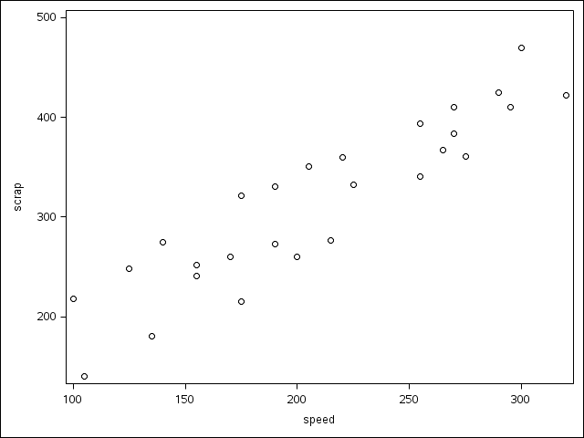

SAS in R Markdown
Introduction
One of the courses I teach is called Applications of Statistical Methods. It uses (mostly) familiar statistical techniques to provide the background for an introduction to R and SAS. (Students taking it have a course in statistical inference, but I find the ideas of that haven’t typically stuck very well.) In previous years, I have introduced both R and SAS at the same time, which posed a challenge for constructing lecture notes and assignment solutions: how do you run code, that might be in either language, and get the output, without a great deal of copying and pasting?
It became clear to me that the answer lay in some kind of “literate programming”. I used to use a thing called statweave, which worked, but is getting rather old, and is a little finicky (you had to distinguish between output that was a graph and output that was text). It uses LaTeX as its base, with SAScode and Rcode environments that play the role of code chunks in R Markdown. Running Statweave first runs R and/or SAS to get the output, places it in with the LaTeX, and then runs LaTeX on the whole thing. I have a feeling that you had to do something like the ods output thing to get nice graphs, but I might have mis-remembered that.
My current “solution” is a bit of a home-brew. I learned that SAS has a thing called statrep, which is also LaTeX-based, that is SAS’s contribution to the world of reproducible research. The way this works is that you put code chunks (and, in fact, “output chunks”) in special environments in LaTeX code, the same idea as Statweave, but it handles graphs more smoothly. This is a bit awkward to run: first you run LaTeX once, which produces a file of SAS code (taken from the SAS code chunks on your document). You run that code through SAS, which produces no output but which creates files in folders lst and fig with text output and graphs respectively. Then you run LaTeX again, which incorporates the output in the right places in your document.
LaTeX users will be familiar with the idea of running it several times.
My home-brewed part was to handle source files with code in both R and SAS. I’m familiar enough with LaTeX, so I know about Sweave and files with extension .Rnw. I thought I could probably rig up something that would process both languages at once. After a bit of experimentation, I figured out that it could be done this way:
- run the
.Rnwfile through Sweave to produce a.texfile with all the R code and output - run the
.texfile through Statrep via LaTeX to produce SAS code to run - run the SAS code
- run LaTeX again to turn the previous
.texfile into a PDF with all the code and output from both languages.
This is a lot to keep straight, so a good way to handle it is via a Makefile. My Makefiles have lines in them like this, this one for a file a1.Rnw that contains child .Rnw files to make an Assignment 1:
a1.tex: a1.Rnw # plus lots of .Rnw files, one per question
Rscript -e "knitr::knit(\"a1.Rnw\")"
a1.pdf: a1.tex
pdflatex a1
sas a1_SR.sas
pdflatex a1
pdflatex a1The two unindented lines with colons say what depends on what. The first one says that you make a1.tex from a1.Rnw, and so if the latter has changed, you have to re-make the former. The indented line(s) are a “recipe” for making the first file from the second one. In the case of a1.tex, the way to make it is to do the command-line version of “knitting” it. The second unindented line, and the four indented lines below it, say how to get the final .pdf file from the .tex file: run LaTeX to get the SAS code, run the SAS code, run LaTeX again (and once more for luck).
So, at the command line, I type make a1.pdf and it runs whichever of those lines need re-running (depending on what has changed since the last make).
This works, and produces gorgeous output (it is, after all, LaTeX). I use the exam document class for assignments as well, since this provides a nice organization for numbered questions with or without solutions. (I do the solutions first, to make sure the questions work, then hide the solutions to the questions that are to be handed in.)
But, it is LaTeX. Can I do the same kind of thing in R Markdown, which is much nicer to write in? The sticking point is evidently running SAS via R Markdown. Today I learned that this is indeed possible, HTML output and all.
Using SAS at the command line
SAS distinguishes, or at least used to distinguish, two kinds of output: output that is purely tables of numbers, and output that is graphics. (Statrep still makes this distinction.) SAS used to make graphs out of text as well, like so much ASCII art. It’s sometimes hard to shake the impression that SAS hasn’t really progressed far since the days of punched cards, and that graphics was bolted on as something of an after-thought. Text output can be obtained at the command line by putting the commands into a file, running sas on that file, and inspecting a file with a .lst extension (if you have one; if you don’t, you study the .log file to find out what went wrong.)
This file, for example, reads in a data file from the web and finds the means of the numeric variables scrap and speed, and then draws a scatterplot of them:
cat soap.sas## filename myurl url "https://www.utsc.utoronto.ca/~butler/c32/soap.txt";
##
## proc import
## datafile=myurl
## out=soap
## dbms=dlm
## replace;
## getnames=yes;
## delimiter=" ";
##
## proc means;
## var scrap speed;
##
## ods graphics / imagename="scatter";
##
## proc sgplot;
## scatter x=speed y=scrap;then you run SAS (installed on your machine) from the command line, like this:
sas soap.saswhich gives no output, whether it worked or not, and then you look at the output in here:
cat soap.lst## The SAS System 21:39 Thursday, August 23, 2018 1
##
## The MEANS Procedure
##
## Variable N Mean Std Dev Minimum Maximum
## ------------------------------------------------------------------------------
## scrap 27 315.4814815 82.9895129 140.0000000 470.0000000
## speed 27 210.1851852 63.4198689 100.0000000 320.0000000
## ------------------------------------------------------------------------------This gives the text part of the output properly. Except for the fact that the output lines might be longer than the screen lines for you, and so the Maximum column might be over on the left instead of on the right where it belongs.
What happened to the graph? This is an image, and comes out in a .png file with the name given in imagename in the code:

This is rather fiddly to organize. Can we do better? Yes. See the next section.
SAS Markdown
If there is R Markdown, then surely there is SAS Markdown, right? Right, an R package by that name. The package provides two “engines” that will run SAS on code chunks (in the same manner that you can run bash, python etc. on code chunks rather than R by saying in the header of the code chunk what kind of code it is).
There is a bit of setup first. You might find that running sas at the command line works for you (in which case it is on your “path”, and you won’t need saspath below), and you might be happy with the SAS defaults, in which case you won’t need sasopts below, but if you want or need either, mimic the examples in the code chunk below:
library(SASmarkdown)## sas, saslog, sashtml, and sashtmllog engines## are now ready to use.saspath = '/usr/local/SASHome/SASFoundation/9.4/sas'
sasopts = "-ls 75"If SAS is not on your path, what saspath needs to contain is the path to the executable SAS file (which will end in sas.exe if you are on Windows). I am on Linux, so mine looks like the above; I think /usr/local/bin/sas also will work for me. (In fact, leaving this out entirely will work for me, since /usr/local/bin is on my path.)
SAS by default uses a line width for text of I think 132 characters, which probably comes from the width of an old-fashioned line printer. My option sets the default “line size” to 75, which will fit on the screen better.
Let’s start with text output, and see if we can mimic what I did before at the command line. I take everything that was in the command file soap.sas up to the proc means, and put it in a SAS code chunk like this:
filename myurl url "https://www.utsc.utoronto.ca/~butler/c32/soap.txt";
proc import
datafile=myurl
out=soap
dbms=dlm
replace;
getnames=yes;
delimiter=" ";
proc means;
var scrap speed;## The MEANS Procedure
##
## Variable N Mean Std Dev Minimum Maximum
## -------------------------------------------------------------------------
## scrap 27 315.4814815 82.9895129 140.0000000 470.0000000
## speed 27 210.1851852 63.4198689 100.0000000 320.0000000
## -------------------------------------------------------------------------Success! (The output is a bit narrower than it was before, thanks to my “linesize” option).
In case you are wondering, the data set comes from a factory that makes soap. The production line can be run at different speeds, and scrap measures the amount of scrap soap pieces that is produced (that is, pieces that cannot be made into soap bars and must be thrown away). You might guess that running the line faster produces more scrap. We investigate that later.
There is something to worry about here: the SAS code chunks are independent of each other, and so, for example, data read in in one will not be available in another:
filename myurl url "https://www.utsc.utoronto.ca/~butler/c32/soap.txt";
proc import
datafile=myurl
out=soap
dbms=dlm
replace;
getnames=yes;
delimiter=" ";That’s the end of my first chunk, and the proc means is in here:
2 proc means;
WARNING: The Base SAS Software product with which MEANS is associated will
be expiring soon, and is currently in warning mode to indicate
this upcoming expiration. Please run PROC SETINIT to obtain more
information on your warning period.
ERROR: There is not a default input data set (_LAST_ is _NULL_).
3 var scrap speed;
ERROR: No data set open to look up variables.
ERROR: No data set open to look up variables.
NOTE: The SAS System stopped processing this step because of errors.
NOTE: PROCEDURE MEANS used (Total process time):
real time 0.00 seconds
cpu time 0.00 seconds
ERROR: Errors printed on page 1.I put error=T on my code chunk to allow processing of this post to continue and not stop if there is an error. SAS veterans will recognize the output here: it’s the SAS log file, and if you look at the ERRORs, there is (a) no default, that is, most recently created, data set (the one read in by the proc import has disappeared) and (b) thereby no data set to get the variables scrap and speed from.
All right, so how do we get HTML output, including graphs? SASmarkdown contains an engine called sashtml that will do that. I’m going to repeat the above (so that you can compare), and also obtain a scatter plot, all in one code chunk. The raw R Markdown is here.
filename myurl url "https://www.utsc.utoronto.ca/~butler/c32/soap.txt";
proc import
datafile=myurl
out=soap
dbms=dlm
replace;
getnames=yes;
delimiter=" ";
proc means;
var scrap speed;
proc sgplot;
scatter x=speed y=scrap;| Variable | N | Mean | Std Dev | Minimum | Maximum | ||||||||||||
|---|---|---|---|---|---|---|---|---|---|---|---|---|---|---|---|---|---|
|
|
|
|
|
|


I had to cheat slightly, since SASmarkdown didn’t put the image where blogdown expected it to be.
The table of means has come out exactly as before, and the scatterplot confirms what we suspected, that running the production line at a higher speed tends to produce more scrap.
Chaining SAS code chunks
A little reading of the documentation reveals a code chunk option collectcode. What this does is to collect up the code for the chunk it’s attached to, and then repeat that code on the beginning of all subsequent chunks. A way to use this is to put collectcode=T on the chunk that reads in the data, and then thereafter the data will be read in and be available for any other chunk. See the R Markdown code for the details, but the effect is as below. First read in the data again with collectcode=T on the top of the code chunk:
filename myurl url "https://www.utsc.utoronto.ca/~butler/c32/soap.txt";
proc import
datafile=myurl
out=soap
dbms=dlm
replace;
getnames=yes;
delimiter=" ";After that, proceed as you would in the SAS IDE (or on SAS Studio online), without collectcode on the top of the code chunk:
proc means;
var scrap speed;| Variable | N | Mean | Std Dev | Minimum | Maximum | ||||||||||||
|---|---|---|---|---|---|---|---|---|---|---|---|---|---|---|---|---|---|
|
|
|
|
|
|
This works because the “collected” chunk with the proc import in it is added to the top of this code, so that the data set is read in again, and because it “belongs” to this chunk, the variables scrap and speed will be found. We could also run a regression in the same way:
proc reg;
model scrap=speed;
| Number of Observations Read | 27 |
|---|---|
| Number of Observations Used | 27 |
| Analysis of Variance | |||||
|---|---|---|---|---|---|
| Source | DF |
Sum of Squares |
Mean Square |
F Value | Pr > F |
| Model | 1 | 149661 | 149661 | 127.23 | <.0001 |
| Error | 25 | 29408 | 1176.31033 | ||
| Corrected Total | 26 | 179069 | |||
| Root MSE | 34.29738 | R-Square | 0.8358 |
|---|---|---|---|
| Dependent Mean | 315.48148 | Adj R-Sq | 0.8292 |
| Coeff Var | 10.87144 |
| Parameter Estimates | |||||
|---|---|---|---|---|---|
| Variable | DF |
Parameter Estimate |
Standard Error |
t Value | Pr > |t| |
| Intercept | 1 | 64.03568 | 23.24876 | 2.75 | 0.0108 |
| speed | 1 | 1.19631 | 0.10606 | 11.28 | <.0001 |


(there are also supposed to be some plots which you won’t see here) and once again the reading in of the data is added behind the scenes to the top of this code. In this case, as we suspected from the scatterplot, there is a significantly positive relationship between the speed of the production line and the amount of scrap produced.
You could also have a second chunk of “collected” code. For example, you might want to run a regression, saving an output data set (say, with the residuals in it), and, later, do something with the residuals. My example below saves the leverages (along with all the original variables). The noprint on the first line suppresses the regression output, which we saw before and don’t want to see again:
proc reg noprint;
model scrap=speed;
output out=saved h=leverage;Because I put collectcode=T in this code chunk header, our collection of code now includes (a) reading in the data and (b) running this regression, obtaining the output data set with the leverages in it. Thus, to display the leverages in order, I now only need to do this:
proc sort;
by descending leverage;
proc print;| Obs | case | scrap | speed | line | leverage |
|---|---|---|---|---|---|
| 1 | 1 | 218 | 100 | a | 0.15313 |
| 2 | 25 | 422 | 320 | b | 0.15236 |
| 3 | 16 | 140 | 105 | b | 0.14284 |
| 4 | 5 | 470 | 300 | a | 0.11418 |
| 5 | 2 | 248 | 125 | a | 0.10643 |
| 6 | 27 | 410 | 295 | b | 0.10583 |
| 7 | 14 | 425 | 290 | a | 0.09795 |
| 8 | 21 | 180 | 135 | b | 0.09109 |
| 9 | 13 | 275 | 140 | a | 0.08414 |
| 10 | 23 | 361 | 275 | b | 0.07721 |
| 11 | 9 | 410 | 270 | a | 0.07125 |
| 12 | 18 | 384 | 270 | b | 0.07125 |
| 13 | 11 | 241 | 155 | a | 0.06616 |
| 14 | 24 | 252 | 155 | b | 0.06616 |
| 15 | 15 | 367 | 265 | a | 0.06577 |
| 16 | 6 | 394 | 255 | a | 0.05624 |
| 17 | 19 | 341 | 255 | b | 0.05624 |
| 18 | 10 | 260 | 170 | a | 0.05248 |
| 19 | 8 | 321 | 175 | a | 0.04888 |
| 20 | 20 | 215 | 175 | b | 0.04888 |
| 21 | 12 | 331 | 190 | a | 0.04093 |
| 22 | 26 | 273 | 190 | b | 0.04093 |
| 23 | 7 | 332 | 225 | a | 0.03914 |
| 24 | 22 | 260 | 200 | b | 0.03803 |
| 25 | 3 | 360 | 220 | a | 0.03796 |
| 26 | 4 | 351 | 205 | a | 0.03729 |
| 27 | 17 | 277 | 215 | b | 0.03726 |
and everything will work. I sorted the leverages so that you can observe that the highest leverages go with the most extreme (highest or lowest) speed values.
Concluding remarks
The output comes out nicely in HTML, but when I tried to knit as PDF or Word, things didn’t come out properly. So the package would be excellent for producing output intended for web viewing. I think I’m going to stick with my Sweave approach for now, but it’s very nice to know that this kind of thing exists.